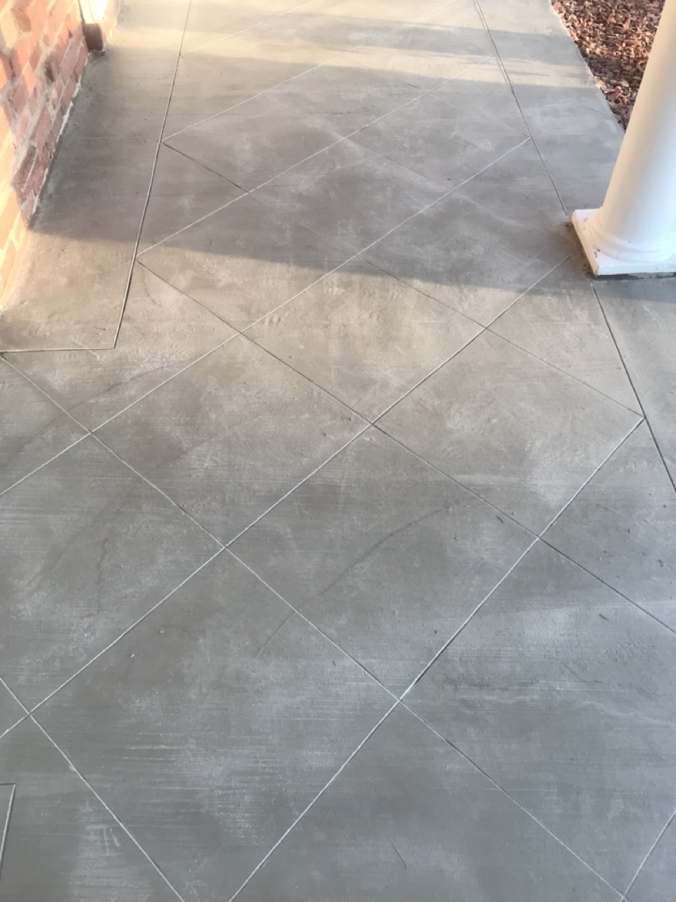

Decorative Concrete
Metallic epoxy, polished concrete, overlays, and stained finishes that transform ordinary slabs into stunning surfaces.
View Projects
Don Dukes brings manufacturer-trained knowledge and hands-on mastery to every project — from structural repairs and polished floors to historical restoration.
Each service is backed by direct manufacturer training and decades of real-world application.
Metallic epoxy, polished concrete, overlays, and stained finishes that transform ordinary slabs into stunning surfaces.
View Projects
Preserving the integrity and character of historic structures with precision repairs and period-correct finishes.
View Projects
Structural mortars, epoxy injection, tilt wall panel repairs, and architectural finishes done right the first time.
View Projects
Most contractors buy materials and apply them. Don Dukes learned directly from the chemists and engineers who create those materials. As a long-time material and equipment supplier to concrete contractors across El Paso, Don built relationships with manufacturers, architects, and engineers that shaped how he approaches every job.
That means when you hire Don Dukes Concrete, you're not just hiring labor — you're hiring decades of problem-solving knowledge, manufacturer-certified technique, and a commitment to giving owners exactly what they expect from their concrete.
We can repair anything under the stars except a broken heart and the crack of dawn.
Get in touch for a consultation — no obligation, just expertise.